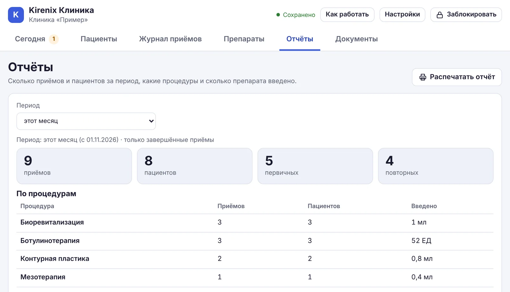
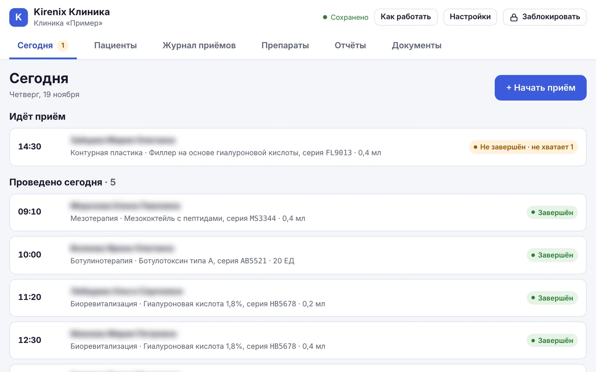
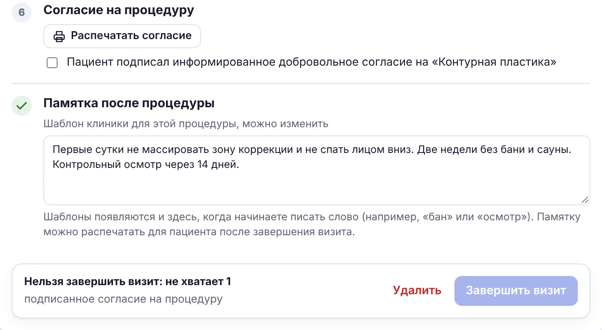
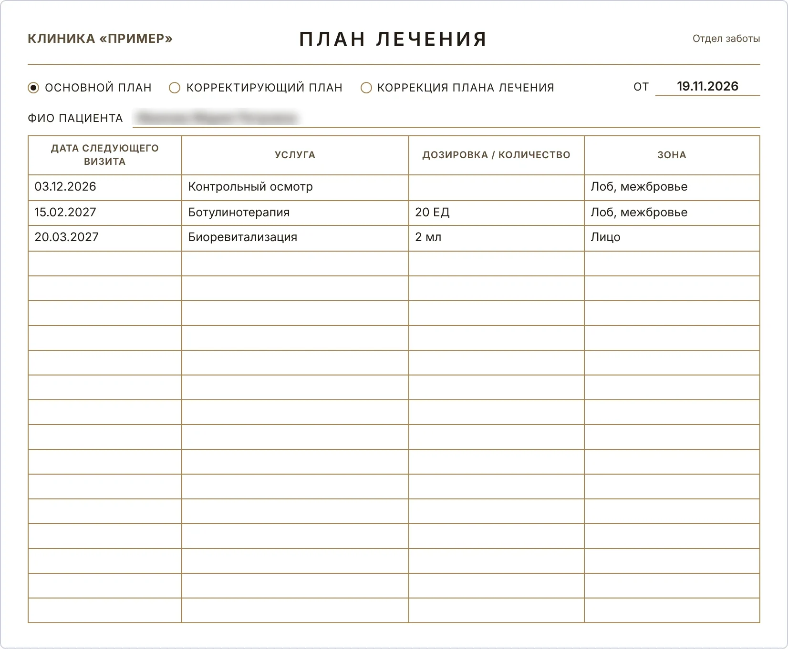

Врач уходит. Пациенты остаются.
Медицинская программа для косметологических клиник: врач не видит телефоны и паспорта пациентов, база остаётся у клиники. Администратор, врачи и владелец работают онлайн в одной программе, её можно связать с YCLIENTS.
- 990 ₽ за врача в месяц
- Сервер в России
Работаете без клиники? Вам подойдёт Kirenix Учёт

Настоящий экран программы: отчёт клиники за месяц по приёмам и процедурам. Цифры из тестовой базы.
База закреплена за клиникой, а не за врачом
Даже если врач уйдёт, пациенты и их карты останутся у вас.
YCLIENTS
Запись и оплата. Если вы работаете в YCLIENTS, запись и оплата остаются там. Менять систему записи не нужно.
Kirenix Клиника
Медкарты и документы. Приёмы на день приходят из YCLIENTS, а медкарты, протоколы и согласия ведутся здесь. Все компьютеры клиники работают онлайн в одной программе.
База пациентов закреплена за клиникой
В браузере, на любом устройстве
Одна программа на всю клинику. Нет YCLIENTS? Перенесём базу пациентов из Excel.
Врач
- Врач не видит телефоны и паспорта
- Врач не может выгрузить базу
Администратор
- Клиника сама зовёт на повторный визит
Владелец
- Каждое открытие карты записано в журнал
Медкарты в файлах и папках
Согласие не найти при претензии
Бумажные бланки лежат в папках, а нужны в тот день, когда пациент недоволен.
Не видно, где врач не дописал протокол
Пропущенную серию препарата или дозу замечают, когда уже поздно.
Врач уходит и уводит пациентов
Телефоны пациентов остаются у него, и через месяц они записываются уже к нему.
Kirenix Клиника решает все три.
Каждый видит только своё
Видит только медкарту
- Приёмы на день приходят из YCLIENTS
- Анамнез и прошлые процедуры
- Телефон и паспорт скрыты от врача

Визит не закрыть с пробелами
Попробуйте: отметьте, что заполнено.

Документы в один клик
- Согласие на обработку ПДн
- Согласие на процедуру
- Карта 025/у заполняется сама

Вся клиника в телефоне
- Журнал: кто открывал карты
- Выгрузка базы заблокирована
- Кого пора пригласить снова
Журналсегодня
- Врач открыл карту пациента
- Протокол заполнен, визит закрыт
- Второй врач: выгрузка базы запрещена
Пора пригласить снова14 пациентов
Данные под защитой
Сервер в России
Подключаем при запуске клиники: данные пациентов хранятся в России, по 152-ФЗ «О персональных данных».
Доступ по ролям
Контакты пациентов видит только администратор.
Договор и поручение
На обработку персональных данных, с каждой клиникой.
Ваши данные остаются вашими
Выгрузим базу клиники по первому запросу.
Одна понятная цена
990 ₽за врача в месяц
- Цена закреплена на 12 месяцев
- Первый месяц с возвратом денег: не подойдёт, напишите до конца этого месяца, и мы вернём всю оплату за него
Коротко о главном
Придётся менять систему записи?
Нет. Если вы работаете в YCLIENTS, запись и оплата остаются там, а Kirenix Клиника связывается с ним.
У нас нет YCLIENTS. Подойдёт?
Да. Базу пациентов перенесём из Excel.
Может ли врач забрать базу, когда уйдёт?
Нет. Телефонов и паспортов он не видит, выгрузить базу не может, а каждое открытие карты попадает в журнал владельца.
Где хранятся данные пациентов?
На сервере в России, по 152-ФЗ: его подключаем при запуске клиники. С клиникой заключаем договор и поручение на обработку персональных данных. Если решите уйти, выгрузим базу по первому запросу.
На чём работает?
В браузере, на любом устройстве: компьютер у администратора, планшет у врача, телефон у владельца. Все работают онлайн в одной программе. Устанавливать ничего не нужно.